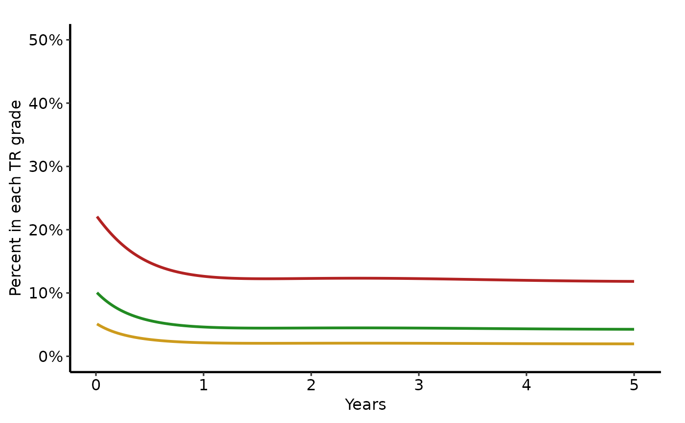
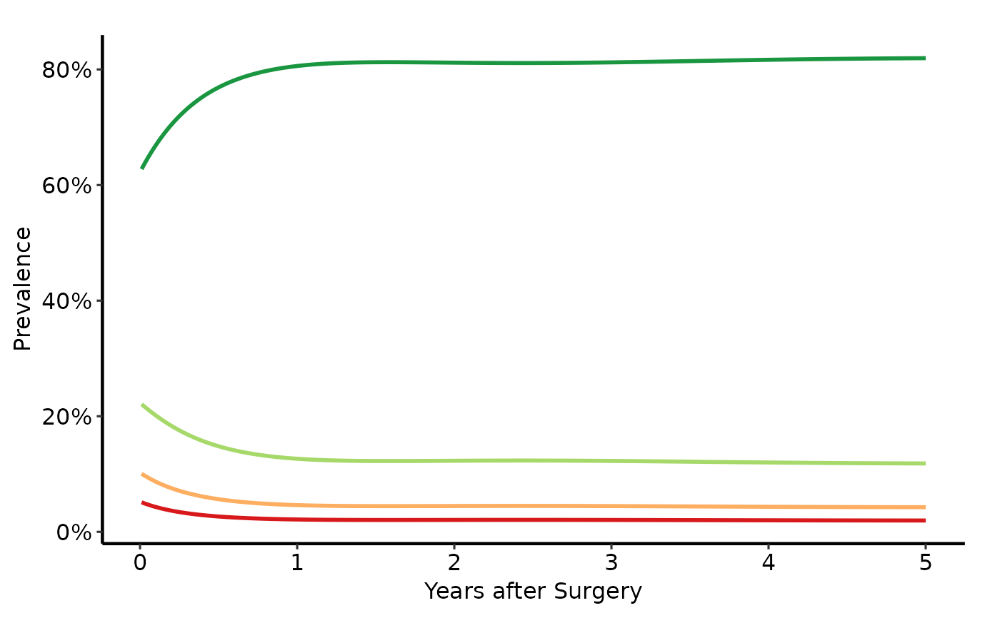
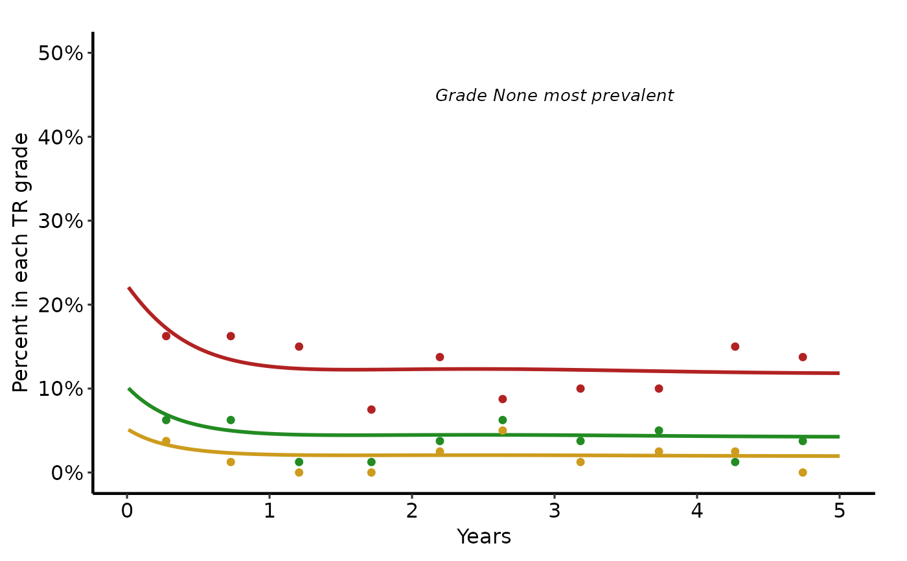
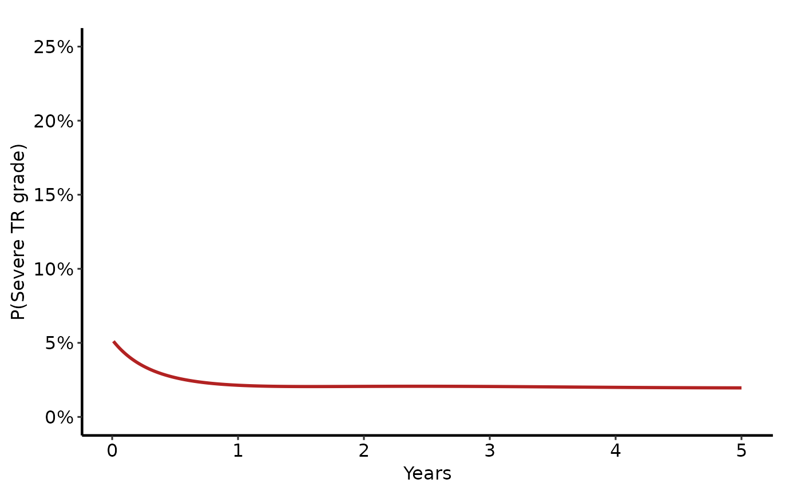
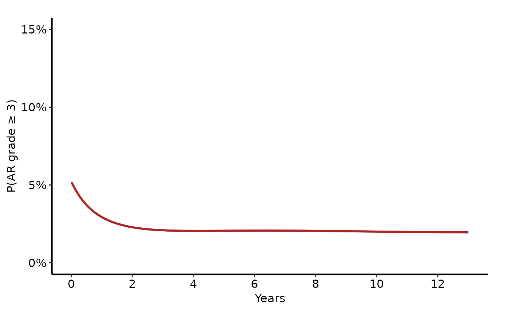
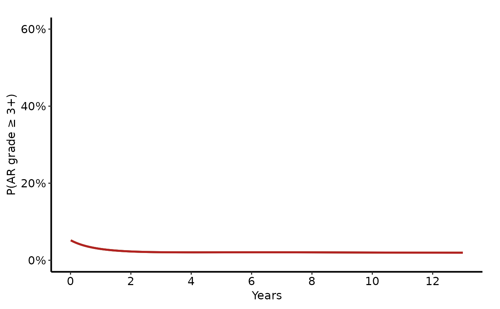

Nonparametric Ordinal Outcome Curve Plot
Source:R/nonparametric-ordinal-plot.R
nonparametric_ordinal_plot.RdPlots pre-computed grade-specific probability curves from a cumulative
proportional-odds nonparametric temporal trend model. Each grade level is
rendered as a distinct coloured line. Returns a bare ggplot object for
composition with scale_colour_*, labs(), and hvti_theme().
Usage
nonparametric_ordinal_plot(
curve_data,
x_col = "time",
estimate_col = "estimate",
grade_col = "grade",
data_points = NULL,
line_width = 1,
point_size = 2.5,
point_shape = 20L
)Arguments
- curve_data
Long-format data frame: one row per (time, grade) combination. Columns:
x_col,estimate_col,grade_col.- x_col
Name of the time (or continuous x) column. Corresponds to
iv_echooriv_wristmin SAS. Default"time".- estimate_col
Name of the predicted probability column. In SAS this is
p0,p1,p2, orp3(one per grade after reshaping). Default"estimate".- grade_col
Name of the grade/category column created during the wide-to-long reshape. Default
"grade".- data_points
Optional long-format data frame of binned data summary points. Must have columns matching
x_col,"value", andgrade_col. Corresponds to the SASmeansdataset after reshaping. DefaultNULL.- line_width
Width of grade-specific curve lines. Default
1.0.- point_size
Size of binned data summary points. Default
2.5.- point_shape
Integer shape for summary points (SAS
symbol=dot). Default20(filled circle).
Value
A ggplot2::ggplot() object. Compose with scale_colour_manual(),
scale_x_continuous(), labs(), annotate(), and hvti_theme().
Details
SAS column mapping (predict dataset after averaging):
time←iv_echo(oriv_wristm)estimate← one ofp0,p1,p2,p3(individual grade probs)grade← a new column created during the wide-to-long reshape
Reshape step required (SAS wide → R long):
library(tidyr)
long <- pivot_longer(predict_wide,
cols = c(p0, p1, p2, p3),
names_to = "grade",
values_to = "estimate")
dp_long <- pivot_longer(means,
cols = c(smntr0, smntr1, smntr2, smntr3),
names_to = "grade",
values_to = "value")
dp_long$time <- rep(means$mtime, 4)
nonparametric_ordinal_plot(long, data_points = dp_long)References
SAS templates: tp.np.tr.ivecho.average_curv.ordinal.sas,
tp.np.po_ar.u_multi.ordinal.sas,
tp.np.tr.ivecho.independence.sas,
tp.np.tr.ivecho.u.phases.sas.
Examples
dat <- sample_nonparametric_ordinal_data(
n = 800, time_max = 5,
grade_labels = c("None", "Mild", "Moderate", "Severe")
)
dat_pts <- sample_nonparametric_ordinal_points(
n = 800, time_max = 5,
grade_labels = c("None", "Mild", "Moderate", "Severe")
)
# --- All grades, manuscript theme (tp.np.tr.ivecho.avg_curv.ps) ----------
nonparametric_ordinal_plot(dat) +
ggplot2::scale_colour_manual(
values = c(None = "steelblue",
Mild = "firebrick",
Moderate = "forestgreen",
Severe = "goldenrod3"),
name = "TR Grade"
) +
ggplot2::scale_x_continuous(breaks = 0:5) +
ggplot2::scale_y_continuous(limits = c(0, 0.50),
breaks = seq(0, 0.50, 0.10),
labels = scales::percent) +
ggplot2::labs(x = "Years", y = "Percent in each TR grade") +
hvti_theme("manuscript")
#> Warning: Removed 500 rows containing missing values or values outside the scale range
#> (`geom_line()`).

# --- With RColorBrewer palette -------------------------------------------
nonparametric_ordinal_plot(dat) +
ggplot2::scale_colour_brewer(palette = "RdYlGn", direction = -1,
name = "AR Grade") +
ggplot2::scale_x_continuous(breaks = 0:5) +
ggplot2::scale_y_continuous(labels = scales::percent) +
ggplot2::labs(x = "Years after Surgery",
y = "Prevalence") +
hvti_theme("manuscript")

# --- Curves + binned data points (tp.np.tr.ivecho.avg_curv.pts.ps) -------
nonparametric_ordinal_plot(
dat,
data_points = dat_pts
) +
ggplot2::scale_colour_manual(
values = c(None = "steelblue",
Mild = "firebrick",
Moderate = "forestgreen",
Severe = "goldenrod3"),
name = "TR Grade"
) +
ggplot2::scale_x_continuous(breaks = 0:5) +
ggplot2::scale_y_continuous(limits = c(0, 0.50),
breaks = seq(0, 0.50, 0.10),
labels = scales::percent) +
ggplot2::labs(x = "Years", y = "Percent in each TR grade") +
ggplot2::annotate("text", x = 3, y = 0.45,
label = "Grade None most prevalent",
size = 3.5, fontface = "italic") +
hvti_theme("manuscript")
#> Warning: Removed 500 rows containing missing values or values outside the scale range
#> (`geom_line()`).
#> Warning: Removed 10 rows containing missing values or values outside the scale range
#> (`geom_point()`).

# --- Subset: show only severe grade for nomogram comparison --------------
dat_sev <- dat[dat$grade == "Severe", ]
nonparametric_ordinal_plot(dat_sev) +
ggplot2::scale_colour_manual(values = c(Severe = "firebrick"),
guide = "none") +
ggplot2::scale_y_continuous(limits = c(0, 0.25),
labels = scales::percent) +
ggplot2::labs(x = "Years", y = "P(Severe TR grade)") +
hvti_theme("manuscript")

# --- Two-covariate ordinal comparison (tp.np.po_ar.u_multi pattern) ------
# Generate two scenarios and stack into one long data frame
dat_tric <- sample_nonparametric_ordinal_data(
n = 800, time_max = 13,
grade_labels = c("0", "1+", "2+", "3+"), seed = 1
)
dat_bic <- sample_nonparametric_ordinal_data(
n = 800, time_max = 13,
grade_labels = c("0", "1+", "2+", "3+"), seed = 2
)
dat_tric$morphology <- "Tricuspid"
dat_bic$morphology <- "Bicuspid"
dat_comb <- rbind(dat_tric, dat_bic)
dat_comb$morphology <- factor(dat_comb$morphology,
levels = c("Tricuspid", "Bicuspid"))
# Plot one grade at a time, coloured by morphology:
dat_3plus <- dat_comb[dat_comb$grade == "3+", ]
nonparametric_curve_plot(
dat_3plus,
estimate_col = "estimate",
group_col = "morphology"
) +
ggplot2::scale_colour_manual(
values = c(Tricuspid = "steelblue", Bicuspid = "firebrick"),
name = "Morphology"
) +
ggplot2::scale_x_continuous(breaks = seq(0, 13, 2)) +
ggplot2::scale_y_continuous(limits = c(0, 0.15),
labels = scales::percent) +
ggplot2::labs(x = "Years", y = "P(AR grade \u2265 3)") +
hvti_theme("manuscript")

# --- Pre-op severity comparison (tp.np.po_ar.u_multi preop_ar pattern) ---
# Three covariate levels (mild / moderate / severe preop AR severity),
# plotted for one grade at a time via nonparametric_curve_plot().
# Matches avrgsev = 2 / 3 / 4 subgroups in tp.np.po_ar.u_multi.ordinal.sas.
dat_mild <- sample_nonparametric_ordinal_data(
n = 800, time_max = 13,
grade_labels = c("0", "1+", "2+", "3+"), seed = 3
)
dat_mod <- sample_nonparametric_ordinal_data(
n = 800, time_max = 13,
grade_labels = c("0", "1+", "2+", "3+"), seed = 4
)
dat_sev3 <- sample_nonparametric_ordinal_data(
n = 800, time_max = 13,
grade_labels = c("0", "1+", "2+", "3+"), seed = 5
)
dat_mild$preop_ar <- "Mild"
dat_mod$preop_ar <- "Moderate"
dat_sev3$preop_ar <- "Severe"
dat_preop <- rbind(dat_mild, dat_mod, dat_sev3)
dat_preop$preop_ar <- factor(dat_preop$preop_ar,
levels = c("Mild", "Moderate", "Severe"))
dat_34 <- dat_preop[dat_preop$grade == "3+", ]
nonparametric_curve_plot(dat_34, estimate_col = "estimate",
group_col = "preop_ar") +
ggplot2::scale_colour_manual(
values = c(Mild = "steelblue", Moderate = "goldenrod3",
Severe = "firebrick"),
name = "Pre-op AR"
) +
ggplot2::scale_x_continuous(breaks = seq(0, 13, 2)) +
ggplot2::scale_y_continuous(limits = c(0, 0.60),
labels = scales::percent) +
ggplot2::labs(x = "Years", y = "P(AR grade \u2265 3+)") +
hvti_theme("manuscript")

# --- Save ----------------------------------------------------------------
if (FALSE) { # \dontrun{
p <- nonparametric_ordinal_plot(dat, data_points = dat_pts) +
ggplot2::scale_colour_brewer(palette = "Set1", name = "Grade") +
ggplot2::labs(x = "Years", y = "Prevalence") +
hvti_theme("manuscript")
ggplot2::ggsave("np_ordinal.pdf", p, width = 11.5, height = 8)
} # }